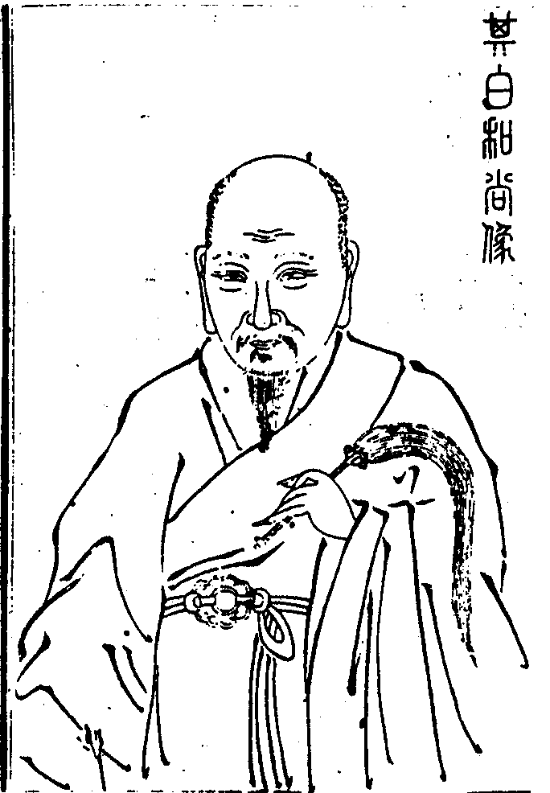

嘉興大藏經 第38冊
No.B430 玉泉其白富禪師語錄 (3卷)
【清 德富說 圓頂等編（依駒本印） 附融徹錄】
第 1 卷
其白和尚像

贊
河岳之鍾生而穎異齠毀知歸性成非習既而踢翩義海喝碎禪天臨濟真燈於焉以傳道唱玉泉塵揮錦水三十餘秋德音萃美鶴林示滅溽暑流金全軀未散定力愈深余以是仰師之道非去來今
香國後學寱堂法秀拜題
蟠龍山玉泉其白富禪師語錄敘
通於教者得清淨口辯才輪通於律者得清淨身神通輪通於禪者得清淨意無礙記持輪又教明權實律達開遮禪知縱奪自利利他不假勉力而自綽綽然有餘地矣其白富禪師德玉四十年前干戈隊裏得益之友慈航老人之徒早通般若法華等經繼而棄教陞大如律主之堂無何又入昭覺吾兄之室副二全彰階陞次第信再來人也得法之後時至理彰龍天四眾推上寶華王座建立法化遂有上堂小參法語拈頌廣錄離為三卷其提唱宗乘實從不思議胸中流出并無穿鑿依傍等玼誠有金鑱抉翳點銕成金手眼然而所長身體力行非文字紙墨中所能載者教耶律耶禪耶階陞次第耶並化門應跡之所彰顯不盡者宜另具一隻眼。
序
原夫大道本無名待人行之為妙至人不居方臨事能之為然所以滹沱一脈代有其人臨濟三十四葉茂發天童枝榮十二爰我萬峰破山師翁得其一焉于明壬申間負密祖麈拂回蜀宗風丕振布幔天網打鳳羅龍十方衲子望風披靡俾人人鼻孔撩天腳踏實地日闢百里道化益隆自蜀而至秦楚滇黔碁布星分插竿相望不勝枚舉復分一枝落於昭覺本師丈老人派亦繁衍唱道諸方本師再分一葉於蟠龍山玉泉法兄其白富和尚高懸赤轍整頓時機吾兄三慧齊脩三學俱煉有時十字街頭教演三乘有時孤峰絕頂拈提向上有時和光同塵大展毘尼故所謂至人不居方在臨事而能之為然也雖有上堂小參頌古法語等偈禁之概不許錄而有門人數輩私竊而記成帙乙亥季春玟睿琳睿二法姪負稿東下嘉禾剞劂入於楞嚴藏室壽世予於癸酉秋奉本師命刊錦江燈錄附藏流通事竣云歸玟琳二姪見示佳稿兼以問序予乃樗櫟之才敢充棟宇堊墁之業詎陳琟琢以吾兄今世門頭猶有下筆處若論向上一著文不加點千聖出頭正眼難窺何處下手請諸方高明者代一轉語看。
玉泉寺其白富禪師語錄目次
目次終
玉泉其白富禪師語錄卷上
康熙乙丑冬結制期主張慧心及紳衿士庶請上堂詣座云猊座孤高韙日登當陽涌出太無情一條白棒鋒鋩銳權實雙彰貫古今遂登拈香者瓣香雪山六年撫育少室九載繁興爇向爐中供養釋迦文佛歷代祖師伏願佛日光輝宇宙法輪常轉娑婆次拈云者瓣香胚胎萬象化育兩儀爇向爐中祝延
當今皇帝聖壽萬歲萬萬歲伏願劫外坤維榮金枝於海宇寰中日月懋玉葉於蠶叢再拈云者瓣香胚腪大化之初秀發九重之上爇向爐中奉為本省當道尊官伏願以仁以政漲福海之波為瑞為祥壯皇圖之塹末拈云者瓣香覷著則眼枯嗅著則腦裂昔年不動軒前一句承當今朝玉泉院中當陽拈出爇向爐中供養現住昭覺堂上本師上丈下雪醉和尚用酬法乳之恩伏願人人悟拈花的旨箇箇得安樂法門斂衣敷座上首白椎云法筵龍象眾當觀第一義師云第一義莫擬議誰是箇中人出班證據看僧問少室家風五傳而至曹溪支分派演門庭雖異根本無殊正恁麼時願聞指示師云無文銕印向空拋進云三要印開朱點窄未容擬議主賓分如何是臨濟下事師云陸地起波濤進云鋒前有語離情謂格外玄機孰可親如何是雲門下事師云杖子[跳-兆+孛]跳上青霄進云君臣道合時雍泰回互機全不露鋒如何是曹洞下事師云無影堂前鳥道玄進云一顆圓明無向背當陽拈出有多般如何是溈仰下事師云徹底神鋒千古鳴進云綠水青山全體現森羅萬象笑顏問如何是法眼下事師云箭刃投處四壁空進云臨機有卷舒覿面無回互和尚門下又作麼生師云吾無隱乎爾進云可謂水歸巨海波濤靜月到蒼梧氣象閒師云不勞重說偈言僧禮拜乃云玉泉今朝開爐另展一番鉗鎚不許退後進前那容畫符相對逼拶當人無避處還有心空及第無若能歸也則天青地謐海晏河清諸佛景仰不及群靈稱贊靡由正當恁麼時如何施設東南西北塵沙國縱橫無處不通風舉雪峰示眾云世界闊一尺古鏡闊一尺世界闊一丈古鏡闊一丈玄沙指火爐云者箇闊多少峰云如古鏡闊師云二大老恁麼酬醋甚是分明檢點將來未免被人勘破何故一人傳虛萬人傳實結椎云諦觀法王法法王法如是卓拄杖下座。
上堂覿面揮開不二門聖凡情盡絕疏親勾章棘句惹風雨塞壑填溝爛葛藤只如高揖釋迦不拜彌勒是甚麼人良久云九旬禁足今朝始剝取蟠桃不老人。
懶石佛冤問潮眾法兄請上堂僧問大地眾生都是閻浮世上客未審幾人到家鄉師云一段風流本自然問善財▆參德雲比丘已領悟機何故更參五十三員師云▆識其中真妙訣除非身帶返魂香進云識得後如何師云施為動轉渾無礙一點恩波散作霖問如何是金剛劍師云太煞逼人寒進云如何是踞地獅子師云踏殺闍黎進云如何是探竿影草師云打斷汝驢腰進云如何是一喝不作一喝用師喝僧亦喝師便打乃云從來法無住相著相乖真即此道不虛行隨行得路古今知識各運本分鉗鎚開鑿人天正眼出沒卷舒悉皆自由到者裏不出戶而知天下不窺牖而見森羅即今因我同門眾法兄命不佞陞座演唱宗乘只得順水推舟不敢逆風把柁播揚家醜舉則古人公案以圖塞責舉南泉問僧云世間何物最苦僧云地獄最苦師云玉泉則不然地獄未是苦不明己事實為苦也大眾還知玉泉麼呈拄杖云者物拈來無向背切莫向外別生枝擲拄杖云枝生也。
解制上堂僧問未結制已前時如何師云東敲西磕進云結後如何師云烹佛煉祖進云盡大地是箇選佛場和尚作麼生解師云展開天地欄放出一群牛問年年此日陞座歲歲今朝制解且道是同是別師云昨日十四今朝十五乃云滿堂龍象自匆匆畫地為牢百日終唯有玉泉拄杖子長年不改舊家風盡大地是個選佛場穿衣喫飯也在裏許痾屎放尿也在裏許行住作臥也在裏許東奔西馳也在裏許敢問諸人還有識得者麼山僧恁麼告報諸人恁麼薦取以拂子擊香几云諦聽諦聽。
上堂三世諸佛說不到開口道著歷代祖師行不到動步踏著古人一切方便與諸人開個入路暨得個入路又須尋個出路登山須到頂入海須到底登山不到頂未免半途而廢入海不到底只見湛湛之波大眾且道不出不入一句作麼生道楖栗橫肩不顧人直入千峰萬峰去。
上堂小店新開貴買賤賣不圖越賺本錢秖要買主便快楊岐栗棘蓬明州破布袋一一橫拋在面前了ㄚ徹底無遮蓋大眾還有下顧者麼卓拄杖云有利無利不離行市。
佛誕上堂僧問四大本空生從何來師云進前來向汝道進云棄卻幻形死從何去師云且退且退進云不生不滅底主人公在甚麼處師便喝問世尊未生時如何師云花開滿樹紅進云生後時如何師云花落萬枝空進云未生已生蒙師指向上宗乘事若何師云唯餘一朵在明日定隨風乃云無法可說是名說法既曰無說今有何說秪為二千七百餘年舊案未免重拈今乃釋迦老子降誕之辰玉泉不解說禪與諸人下個註腳以拂子畫[十○]相云離兜率降皇宮無縫罅裏月朦朦行七步稱大雄夜半石人撞木鐘喝一喝。
上堂千古風光尚宛然真機吐向萬峰前燈籠露柱頻頻舉明暗色空漫流傳。
上堂問去來不以相動靜不以心是甚麼人師云描不成畫不就乃云說玄說妙土上加堆有問有荅白雲萬里去此二途如何施設卓拄杖云千峰勢到嶽邊止萬派聲歸海上消。
上堂善哉釋迦文虛空常懊惱癡夢猶未破開眼天大曉三千年外舊家風令人仍向風前討年年四八佛降誕歲歲臘八佛成道秖因饒舌遍地葛藤許多英靈都被枝蔓絆殺人人分心岐路個個逐妄迷真山僧鼓舌搖唇要與諸人解黏去縛豎拂子云若向者裏會得始信高沙彌不登壇而便名具足盧行者負石春而當下圓成如或未然且莫錯會參。
除夕上堂爆竹一聲乾坤震動山雲水石何處出頭東村王老夜燒錢太煞小膽北禪以白牛分歲自取勾牽玉泉非是屈抑先哲秖為門風各別大眾還有成褫者麼良久云幾回不遇知音客徒勞守歲到三更。
九日上堂問靈山會上迦葉親聞少室峰前神光得髓即今玉泉有幾人知音師云鐘中無鼓響鼓中無鐘聲進云過在甚麼處師云疑則別參乃云至化時行萬象零須彌百億海雲騰儼然諸佛塵沙現拄杖頭邊任縱橫呈拄杖云會麼喚作拄杖子便是諸佛喚作諸佛卻是拄杖子道得分明玉泉與你證據如或未然木上座一狀領過舉僧問雲門如何是諸佛出身處門云山高水長師云玉泉則不然有人問如何是諸佛出身處秪向他道銕庫裏然燈者事且置只如重陽節屆到來一句作麼生道良久云重陽九月菊花新。
天中節上堂端陽五月五空懸一輪孤家家結綵續命戶戶蘭湯去毒唯我衲僧分上不入者些鬼窟大眾到者裏又作麼生卓拄杖云門神鼓掌呵呵笑艾虎高懸日卓午。
元旦上堂僧問如何是新年頭佛法師云斗柄東向大地皆春進云年新月新日新時新未審佛法有新舊也無師云看取令行時進云如何是新鮮佛法師云野梅開正眼綠柳長精神乃云璇璣一轉萬象新斗柄東向大地春唯有者條烏楖栗冷笑人間歲月增陰陽造化密運無私江淮河漢盈虛有準有時桃紅柳綠有時水碧山青有時萬物咸新有時百卉凋零有時天清地泰有時電閃雷鳴且喜無位真人於斯越色超聲不屬陰陽造化豈逐四序而行秉於無極之初得自先天之始以拂畫[○@│]相云於斯薦得非為截斷天下人舌頭穿卻衲僧鼻孔管教釋迦拱手彌勒著驚驀召大眾云還知無位真人麼參。
上堂高天之上厚地之下中有一寶無人識價諸佛放他不過祖師提掇不下無端撞入玉泉八臂那吒驚怕以兩手作捧勢云山僧和盤托出人人受用不盡玉泉恁麼道只堪世諦流布若論無上之寶別時再舉一僧出擬開口師打云但有言說都無實義。
上堂頂門出入之主萬化不渝含元殿上之尊四臣不昧端拱而治不令而行昭昭於心目之間相不可睹晃晃於色塵之表理不可分天地同一覆幬日月同一照臨壽逾百億須彌福洽大千沙界且道正恁麼時如何體認擊禪床下座。
上堂問如何是玉泉境師云庭前牽柳綠階後落花紅進云如何是玉泉人師云聖凡同一體到來無主賓進云如何是奪人不奪境師云一拶鋒鋩盡雷兢發楚雲進云如何是奪境不奪人師云落花流水去牧笛出雲岑進云如何是人境兩俱奪師云五岳咸煨盡三山本絕蹤進云如何是人境俱不奪師云牧童吟野賦漁父和巴歌問劍未出匣時如何師云太平無事進云出匣後如何師云禦使堅牢僧喝師打乃云奪人不奪境山自青兮水自澄奪境不奪人月華已到第三更人境兩俱奪舌爛河山虛空破人境俱不奪亭臺風埽金殿閣不解言下領旨返向句外十度恁伊費盡伎倆未免無繩自縛山僧不惜唇皮為眾當陽剖露覿面相呈一著子卻被蜘蛛網羅布上堂犬守夜雞司晨鵲噪枝頭雨蟬鳴樹上雲一種靈光何故各不相知參。
昭覺本師老人誕辰秉拂上堂拈香祝聖訖復拈云者瓣香幾翻毒手斫成百煉爐中拈出爇向玉爐供養堂上本師丈老人伏願籌添海屋春▆遠棒頭惡辣胤兒孫斂衣就座白椎竟師云今朝不荅話問話者三十棒還有俊鷹快鷂向棒頭下翻身者麼良久云秖如半偈亡軀一句投火又圖個甚麼今日昭覺結九旬之制畫地為牢開大冶之爐聖凡陶鑄好向者裏各究本有莫衒虛頭強作主宰若於個事中倘無見處喚作乾慧之徒所謂參須真參悟須實悟自有個倒斷處若不如斯喚作造次之流則無究竟之日且道其中妙旨如何定當驀呈拄杖云向者裏定當得許你天下橫行如或未然九萬里鵬方展翼一千年鶴始翱翔。
上堂塗毒鼓邊豈容側耳太阿鋒前不許藏身眾中還有不懼危亡者麼一僧出師驀頭一棒僧擬開口師又打僧喝師連棒打退乃云放風前聖箭轉劫外玄機舉惡辣鉗鎚穿衲僧巴鼻若個頂門具眼方知萬機頓息若作佛法商量未免墮坑落阱不作佛法商量鑊湯爐炭有分正恁麼時如何秖對金繩拽轉泥牛鼻夜半牽來海底耕舉高峰示眾云海底泥牛銜月走岩前石虎抱兒眠銕蛇鑽入金剛眼崑崙騎象鷺鷥牽復舉雙桂老人頌云螻螘推起萬斛舟蝦蟆唱遍楚天秋烏龜跳上須彌頂瑪瑙珊瑚盡害羞召大眾云此二頌內有一句能縱能奪能殺能活到者裏薦得許汝參學事畢脫或未然玉泉也有一頌亦要諸方檢點烏龜打鼓鱉撐船角鰲盪槳鱔持竿石女岩前歌雪曲螺螄蚌蛤打鞦韆咄莫將閒學解埋沒祖師心。
上堂以拂子打○相云山僧就中現無量大寶王剎一一剎土現無量百千化佛一一化佛放無量億種妙光一一光中照無量萬億沙界一一沙界所有草木叢林蜎飛蠕動燈籠露柱羅漢夜叉或修清淨善因或造無邊惡業盡在其中出沒卷舒不相妨礙正當恁麼時如何演唱妙印手提邊塞靜當陽那肯露鋒機舉世尊在靈山會上拈花示眾百萬人天悉皆罔措唯金色頭陀破顏微笑世尊云吾有正法眼藏涅槃妙心付囑於汝無令斷絕舉拂子云者個妙心切莫他覓覓亦不得得亦不真大眾還知者個妙心麼當下不知親薦取徒向威音那畔猜。
上堂僧問大徹底人本脫生死因甚命根不斷師云露出摩醯眼堅持護命符進云佛祖公案只是一個道理因甚有明與不明師云秤鎚原是生銕鑄進云大修行人當遵佛行因甚不守毘尼師云色塵皆妙用何處不稱尊進云杲日當空無所不照因甚被片雲遮卻師云不須懸石鏡天曉自然明進云人人有個影子寸步不離因甚踏不著師云腳跟下好與三十進云盡大地是個火坑得何三昧不被燒卻師云火焰裏潛身乃云岩前石虎夜嘶風海底泥牛日走東崑崙神足追不及隱入諸人鼻孔中顧左右云伶俐漢纔聞提舉如芥投鍼若是機思遲鈍猶隔萬仞千層昔日調御師六載思惟計盡情忘不免全身放倒山僧到者裏只得依葫蘆畫樣按下雲頭寶劍橫拖就窠打劫直教他一個個不假慈航到岸直入大圓覺海擊拂子云聞麼豎拂子云見麼若向聞邊體究病在音聲若向見處薦取病在色塵假使坐斷聲色二途猶是枝葉邊事且道那裏是向上事聻無出沒無言語功成果滿憑何舉吹銕笛擊毒鼓漁叟歌牧童舞雲從龍兮風從虎。
上堂僧問昔日臨濟問龍光云不展鋒鋩如何得勝龍光據坐意旨如何師云行船不犯東西岸須信篙人用意良進云臨濟道大善知識豈無方便龍光瞪目又作麼生師云一篙撥轉波心月和舟載霧過蘆灣進云恁麼則鳥棲無影樹花發不萌枝師云閒言語進云可謂一曲鈞天雲外奏知音格外盡皆聞師云且喜闍黎念得清乃云把住牢關人天莫測裂開一縫凡聖咸知拘執則萬別千差融通則彼此全備且道全備後如何不開口處玄關轉未措言時鳥道玄舉昭覺本師上堂云吾有一句百味具備時有一僧門外立本師云那漢進來僧才入師便下座且喜我堂中有一員靈利衲僧便歸方丈乃云老人直截為人處勝是分明自非拶透重關者不能得荷者漢卻也伶俐未免進得門來無出身路顧左右云未審玉泉堂中有此人麼時一僧出師打云一釣便上。
上堂舉慈明和尚室中以水一盆上劄一口劍下著一緉草鞋橫按拄杖有僧入門便指纔擬議明便棒師云者老漢婆心不已弄盡手腳總是徹底為人只願個個鼻孔遼天單刃直入據富上座冷眼看來也是向虛空裏穵洞白地上討天者場漏逗古今提唱者極多錯會者不少召大眾云有具眼者不妨通個消息如或未然山僧對眾頌出蒺藜水劍草鞋俱水急魚龍不敢棲未入已知來見解棒頭點處血星飛元宵上堂元宵正十五家家懸火樹拈起雪峰毬打起禾山鼓拈弄秘魔釵活擒戴角虎驚動跛鱉盲龜都向門前跳舞阿呵呵上元原來是十五咄[口*悉]唎[口*悉]唎囌嚧囌嚧。
誕日上堂僧問和尚向未出母胎時道一句看師云光爍爍進云未生之前蒙師指降生之後意如何師云不萌枝上花開早無縫罅裏瑞雲騰進云即今陞座一句作麼生道師云大整頹風歸王化仰祝聖壽等乾坤問世尊初生放光動地和尚降誕有何祥瑞師云紅霞穿宇宙白日點波心進云世尊與和尚是同是別師云一字兩頭垂問壽筵洞啟鳳舞羽以呈祥彤氣環流龜負圖而益算只如南極老人到來慶祝一句作麼生道師云且立下風進云恁麼則人人眉宇已增新彩色慈容猶展舊風流師云直饒恁麼也是無端特地乃云今朝臘月三十又值吾母難期大地山河鋪玉乾坤草木抽枝四相從此假合萬物混融一體無情均獲詶唱有情盡得瞻禮唯有佛魔人天到此亦須不立大眾要會山僧未生前事麼吽吽若有個頂天立地腦後見腮的漢子向山僧未出方丈時薦得三世諸佛歷代祖師天下老和尚當體全彰分身百億不涉程途一生了備如或未然也是有眼不見參。
豎佛書樓上堂般若弘深大辯才虛空涌出玉樓臺沒量漢兒親居此百萬人天獻法財無邊剎海自他不隔於毫端十世古今始終不離於當念即今眾檀越緇素等協同興此一念便向無相國裏毫毛頭上建立種種瓊樓玉殿恆河沙數金容囊藏百萬人天收盡五湖風月原來不負靈山之囑法門慶幸山僧赴約而來勉整頹風兼請登寶華王座轉大法輪舉揚個事大眾且道結角羅紋一句作麼生道卉木叢林均吐舌磚頭瓦礫盡生光。
中秋上堂秋風颯颯起殿閣冷沉沉月色四時燭今霄分外明竹葉溪邊綠荷花水面清南樓添意氣斫句更新新空劫已前事當陽舉似人以拂子畫○相云直下分明薦取廣寒宮殿如雲。
雨後上堂僧問有問有答落塹墜坑契理契機顢頇後學如今正令既行請師通個消息師云寶劍橫空逼人寒進云動絃別調世外知音以臥具打圓相云未審者個作麼生和師云且緩緩進云不是吾人多意氣他家曾踏上頭關師云金剛腦後三寸銕問廢寢忘勞總要明心如何是心師云屋北鹿獨宿進云撥草瞻風秖圖見性如何是性師云溪西雞齊啼進云識得心性了脫生死且道作麼生脫師打云打破漆桶乃云剛打雷便下雨雨後依前日又輝東林畔竹流水明明說法誰知委覿體全彰劫前意山僧有口無處舉震威一喝云一喝似雷奔棒頭亦如雨。
上堂石鞏入門張弓秘魔逢人舞杈禾山僧來打鼓趙州接人喫茶船子覆舟失命臨濟七事交加今朝玉泉者裏了了更無一法且道如何是為人處一拳一個彌勒一腳一個釋迦。
上堂自歎無緣把直鉤魚蝦到此不相投笠蓑欲脫風前挂又恐鯨鱗觸釣舟眾中有負命者麼僧問截銕斬釘埋沒先聖合水和泥恐負後昆去此二端如何指示師云寰中天子敕塞外將軍令進云恁麼則不但安怗家邦靜亦乃把定世界寧師云堯天民有賴舜日照無私進云可謂一舉即登龍虎榜玉堂人喚狀元兒師云貴異天然不出戶家音不許外人知乃云了妄歸真萬累空河沙凡聖本來同直須密契心心地始悟生平睡夢中所謂佛法要妙離言說相離文字相離心緣相不可以有心求不可以無心得不可以言語造不可以寂默通如塗毒鼓聞者則腦門百裂似猛火聚近之則燎卻面門實謂壁立萬仞剿絕聖凡假使智如鶖子辯若維摩三世諸佛同時出來也須退後三步如是自在威神只許老胡知不許老胡會到者裏如何啟口然官不容鍼私通車馬放開一線卻有商量卓拄杖云玉欄杆上頻伽鳥紅藕花間白鷺鷥。
上堂目前無法意在目前若是目前法向佛邊學此人未具眼在上根之人言下明道中下根器波波浪走不向當人薦取何更疑佛疑祖更聽一偈更識生死來去路唯在當人向己求只因目前迷正法撥草騎牛去覓牛。
上堂僧問如何是活句師云饑來喫飯進云如何是死句師云困來打眠進云如何是不死不活句師云碧岫山莊面寒潭水畫眉問棒喝交馳即不問更有向上事也無師云少年一段風流事唯許佳人獨自知進云知個甚麼師云高著眼乃云動容瞬目無出當人一念清淨本來是佛復說偈云本來絕淨染無滅亦無生幻即知身幻無幻本來真。
上堂舉古德陞座云山僧有時一棒作個縵天網打俊鷹快鷂有時一棒作布絲網摝蜆撈蝦有時一棒作金毛獅子有時一棒作蝦蟆蚯蚓師以杖擊空云玉泉者一棒且道作麼生商量若有個頂[寧*頁]具眼漢出來道得分明拄杖子禮拜有分如或未然也是噇飯過時喫銕棒有分莫言不道。
上堂作家手眼最希奇殺活雙行不易知若是一回歸故者自然當下了無疑所以百丈鼻準搊得痛人前解笑不解啼臨濟棒頭喫得徹歸來便轟轟烈烈此二老便是樣子諸兄弟何不照伊行去效伊做去到此果獲百煉千鎚幾遭毒手不能了悟山僧實為誑語永墮拔舌犁耕嘿嘿甘受不唯山僧嘿嘿甘受三世諸佛歷代祖師天下老和尚一一只得甘受脫或未然不見道做馬銜銕負鞍做牛拖犁拽耙那時際莫願山僧不與汝證明也顧左右云棄真作假街前弄好惡難瞞自己心。
寒食上堂綠荷初出小池平林樹來紅杜宇聲野外掃墳無限客望雲哽噎到黃昏座中未了生滅者擬向圯山覓二親就中契旨誰相委信知寒食是清明。
佛誕上堂寶劍橫空聖凡情盡擬議者則喪身失命如有不顧眉毛者出眾道看問佛本無去無來如何道今日降生師云金雞抱子離霄漢玉兔懷胎入紫宸進云古人道染污即不得修證則不無既染污不得何用修證師云且莫錯舉問黑白未分時如何師云赤眼撞著火柴頭進云全黑時如何師云墨漆燈籠進云全白時如何師云杲日當空乃云出胎未斷[囗@力]聲指天指地稱尊只為源頭水濁至今到底不清韶陽拈棒打殺瑯琊知恩報恩個個隨波逐浪人人自不圓成不圓成自此從他不相親正眼看來老漢從三大阿僧祇劫來未嘗入滅年年四月八日何曾降生若道周行七步目顧四方指天指地作師子吼都是一場扯誕惹得兒孫牽枝引蔓生疑生怪卓拄杖云釋迦老子來也大眾見麼復卓拄杖云被山僧杖頭觸碎鼻孔。
上堂舉外道問佛不問有言不問無言世尊良久外道讚歎云世尊大慈大悲開我迷雲令我得入師云黃面老子為三界大師四生慈父呼牛應牛呼馬應馬外道不識好惡說甚大慈大悲開我迷雲令我得入也是鸚鵡能言外道去後阿難問云外道有何所證而言得入世尊云如世良馬見鞭影而行師乃喝云翳眼見空花黃面老子被外道一問便見七花八裂了也當時若與他一刀兩斷免使兒孫未至埽地喝一喝下座。
上堂僧問崔趙公問國一祖師云弟子欲出家得否一云出家乃大丈夫事非將相所能為意旨如何師云風頭太硬進云若無舉鼎拔山力千里烏隹不易騎師云空做他人力進云石門聰舉似李都尉都尉於此悟入且道悟個甚麼師云特地一場愁進云學道須是銕漢著手心頭便判直趣無上菩提一切是非莫管是何意旨師云汝從頭再背看進云老老大大恁麼說話師云老僧住持事繁乃云拏龍伏虎幾番驚赫人天平實商量盡是一場扯誕風清月白乃是乾坤正氣山明水秀俱合鷲嶺真機應上皇之風化開正覺之風規大悲運物若兩儀之覆載應機設教猶四序之生成領悟各殊歸源是一召大眾云且道是一非一若道是一萬物各有其殊若道非一墮在境緣之中卓拄杖云事事無窮盡千古月為燈。
上堂問工夫未入手時如何師云好個消息進云入手後又如何師云蹉過也不知乃舉鹽官示眾云虛空為鼓須彌為槌是什麼人打得南泉道我當時若見向他道王老師不打者破鼓法眼道南泉何須恁麼道但道不打自然是個破鼓師云鹽官據虎頭南泉收虎尾法眼分皮分髓諸尊宿雖然各出一隻手只是下不得槌總是個打口鼓漢玉泉者裏直截與諸人道破以拄杖作擊勢云鼕鼕。
上堂舉文殊問無著南方佛法如何住持著云末法比丘少奉戒律殊云多少眾著云或三百或五百著問文殊此間佛法如何住持殊云龍蛇混雜凡聖同居著云多少眾殊云前三三後三三乃召大眾云無著道三百五百只是個欲隱彌露置之弗論秖如文殊道前三三後三三如何話會眾中設有個與文殊同鼻孔出氣的漢試道看良久卓拄杖云不免與諸人下個註腳一二三四五五四三二一前三加後三六七八九十若作佛法會沒卻諸人鼻不作佛法會瞻前而後失。
玉泉其白富禪師語錄卷上終